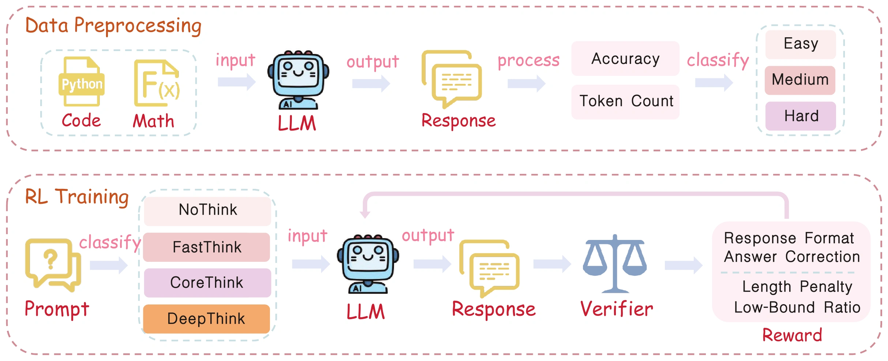

NoThink
A direct answer, without an explicit thinking trace.
SABER: Switchable and Balanced Training
for Efficient LLM Reasoning
¹ Bilibili Inc. ² Xi’an Jiaotong University
* Equal contribution † Corresponding author
Some questions need a moment. Others deserve a deeper look. SABER gives you the choice—four reasoning modes in one model, learned through budget-aware reinforcement learning.
Select a mode to trace its path. A conceptual illustration, not measured trajectories.
fewer thinking tokens
7,866 → 2,719higher accuracy
80.6% → 83.5%training examples
1K math + 1K codeMATH · 1.5B · FastThink
Compared with DeepSeek-R1-Distill-Qwen-1.5B.
Table 1 in the paper.
Long chains of thought help language models solve hard problems. Applied to every question, they also bring unnecessary tokens, latency, and cost.
SABER learns when to compress and when to preserve reasoning. A system prompt lets the user choose a direct answer, essential steps, a fuller explanation, or unrestricted exploration—all from the same trained model.
One model. Four modes. A deliberate trade-off between reasoning depth and inference cost.
A direct answer, without an explicit thinking trace.
Keep the essential steps. Spend fewer tokens.
Leave room for intermediate steps and reflection.
Explore and self-check, without a target budget.
Start from a distilled reasoning model. Calibrate the budget to each example, then learn to switch with direct reinforcement learning.
Profile the base model’s answer correctness and thinking length on 1K math and 1K code examples.
Downgrade budgets for solved examples. Give unsolved ones more room. Add direct-answer versions for NoThink.
Use GRPO with rewards for format, correctness, budget alignment, and length-ratio safeguards. No extra SFT warmup.
r = format + answer + length + ratio
Correct answers matter. So does how you get there.The base model’s thinking length is grouped around 128 / 4,096 / 16,384 tokens. Correctly solved examples receive shorter target budgets; among failed examples, half retain their original tier and half are left unrestricted.
A length-ratio reward penalizes generations outside 0.2–1.2× the base thinking length, helping prevent degenerate shortening. Budgets are prompts and training targets, not guaranteed hard cutoffs.

Every point is a reported result. Switch the model size and benchmark to see where each reasoning mode lands.
| Model / mode | Accuracy (%) | Thinking tokens |
|---|
Beyond the training domains. The same recipe scales to 7B and transfers to unseen logical reasoning. On LiveBench-R, DeepThink reaches 38.3% accuracy versus 36.4% for the base model. Faster modes trade some accuracy for greater savings.
A small arithmetic problem makes the difference visible: the core solution stays; the amount of reflection changes.
Illustrative summaries adapted from Figure 3. The three thinking traces are condensed; NoThink is a direct-answer illustration. This is not live model inference.
Aggressively shortening every example hurts accuracy. Correctness-aware budget assignment preserves room for problems the base model cannot yet solve.
On MATH with the 1.5B model, NoThink accuracy is 76.9%. Removing NoThink training data lowers it to 62.3%—direct answers need explicit practice.
Efficiency gains are not universal accuracy gains. The four modes expose the balance, so users can choose the reasoning depth their task deserves.
Ablation evidence: Tables 1 and 3; cross-scale trade-offs: Table 2.
SABER: Switchable and Balanced Training for Efficient LLM Reasoning
@article{zhao2025saber,
title = {SABER: Switchable and Balanced
Training for Efficient LLM Reasoning},
author = {Zhao, Kai and Zhao, Yanjun and
Song, Jiaming and He, Shien and
Zhang, Lusheng and Zhang, Qiang
and Li, Tianjiao},
journal = {arXiv preprint arXiv:2508.10026},
year = {2025},
url = {https://arxiv.org/abs/2508.10026}
}